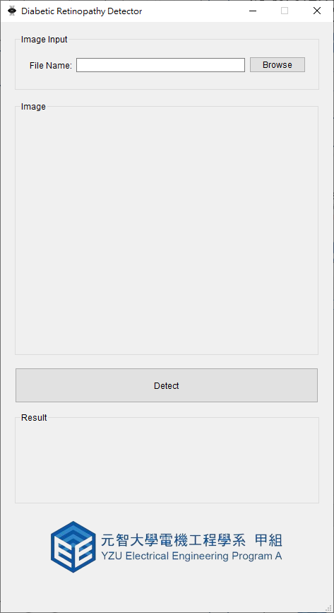
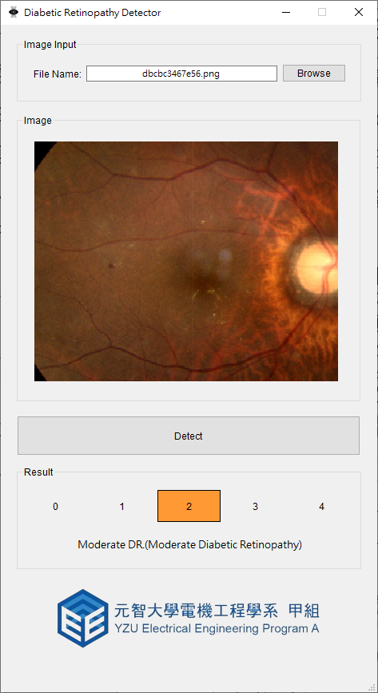

Overview
Diabetic retinopathy (DR) is a complication of diabetes that damages the retina, potentially leading to blindness. In the APTOS 2019 Kaggle competition, we developed a deep learning solution achieving Top 1% global accuracy.
This project uses EfficientNet with advanced data augmentation and ensemble techniques to classify retinal images into 5 severity grades.
Diabetic Retinopathy Grades
Explore the different stages of DR using the interactive gallery below. Images range from Grade 0 (Healthy) to Grade 4 (Proliferative DR).
Training Pipeline
Our solution involves a robust pipeline consisting of data augmentation, transfer learning with EfficientNet, and cross-validation ensembles.
Data Augmentation Visualization
To prevent overfitting and improve generalization, we apply real-time augmentation during training. The simulation below demonstrates how the network sees variations of the same input image.
Figure 2: Real-time simulation of random affine transformations and color jittering.
Results
We achieved a Quadratic Kappa Score of 0.929 on the private leaderboard, ranking 19th out of nearly 3000 teams.
| Model | Post Process | Public Score |
|---|---|---|
| EfficientNet B4 | - | 0.805 |
| EfficientNet B4 | TTA (Test Time Augmentation) | 0.813 |
| Ensemble (B4 + B5) | TTA | 0.822 |
User Interface
We also developed a desktop application using PyQt5 to allow easy deployment of the model in clinical settings.

